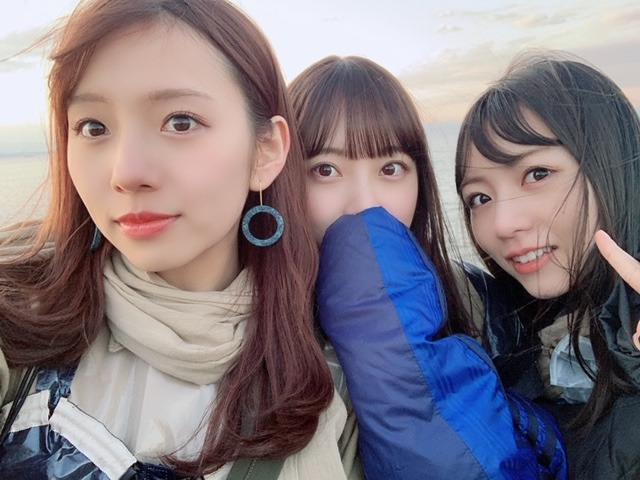
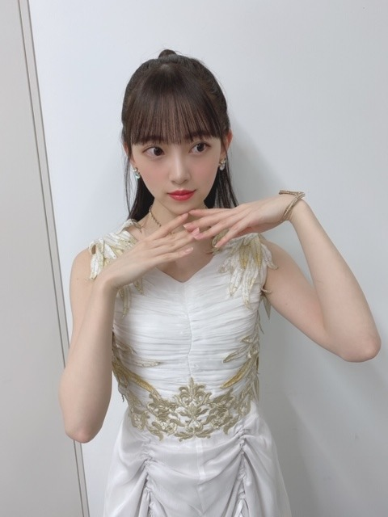

2020/0309Mon#アナスターシャ
2期生MVの
アナスターシャ が公開されました!
もうみなさんは見てくださいましたか?
監督は伊藤衆人監督です☺︎
朝からずっとみんなと一緒にいて楽しかったなぁ
塔を登るシーン、実はめちゃくちゃ寒くて
ウワアアアアアってみんなで叫びながら登っていました!
寒かった~
でも良いシーンになりました!
完成したMVはたまたまバスラの時に名古屋のホテルで純奈、日奈子、絢音、みり愛と一緒にいたのでみんなで観たのですがその時はみんな泣くのを我慢していて。笑
各々、自分の部屋に戻って観て泣きました。笑
ストーリーにいろんな意味が込められています。
大切な大切な曲をいただきました。
たくさん観てください!


#アナスターシャ
#アナスターシャ考察
で是非感想つぶやいてください✨



ではは
2020/03/09 18:54
コメント(378)
Mステのみおなさんのヘアスタイル、、何だか新しかったです♡ ねおみおな…(なんちゃって(o^^o)) お顔の輪郭がキレイだからなんでも似合っちゅう♡ 個人的にテンションあがりました！ やっぱりおしゃれ全般にこだわりを持たなければ女子力もあがりませんものね。事情があってみおなさんのインスタが今みられん状態なので毎日更新してくれるブログを楽しみにしています♪( ´▽｀) お話は変わって…こんな時こそ映画をみて元気になりましょう！ 「ガラスの城の約束」「さよなら退屈なレオニー」「パピヨン」(リメイク版) 「さよならの代わりに」「Be with you〜いま会いにゆきます」「ドアロック」えーっと…おやすみおな(_ _).｡o○
お疲れ様です!
二期生ほんまに最強やな！
未央奈！ブログ更新ありがとう！
アナスターシャのMV見たよー！
2期生っぽくて好きだったな！
色んなことを考察するのがすごい楽しいよ笑
最近アナスターシャばっかり聞いてるんだ！
それぐらい2期生ライブで聞いた時からいいなって思った！
リズムとか歌詞もすごく良くって本当に大好き！
これからもずっと聞かせてもらいます笑
体調に気をつけてね！またコメントする！
いろは。
アナスターシャのMV見たよー！
2期生っぽくて好きだったな！
色んなことを考察するのがすごい楽しいよ笑
最近アナスターシャばっかり聞いてるんだ！
それぐらい2期生ライブで聞いた時からいいなって思った！
リズムとか歌詞もすごく良くって本当に大好き！
これからもずっと聞かせてもらいます笑
体調に気をつけてね！またコメントする！
いろは。
堀さん、こんばんは。
土曜日は『幻の二期生ライブ』配信ありがとうございました。
42万人分の1人としてしっかり視聴させていただきました。
そこで初解禁となりました25thシングル収録の二期生楽曲『アナスターシャ』。MVと合わせて初めて聴いた感想はただ一言「至高の名曲」、これに尽きるかと。
MVは二期生を誰よりも愛し誰よりも理解してくださる伊藤衆人監督の作品。ちりばめられたさまざまな伏線を解き明かす楽しみとともに、場面場面の持つ意味の深さに感慨もひとしおです。
今日もMV何度観返したことでしょう。これからずっと愛聴していきたいすてきな曲をありがとうございました。
ではまたコメント寄せますね。ぐっすりおやすみおな。
さらばだ、また会おう！（気球に乗って去りぬ〜）
土曜日は『幻の二期生ライブ』配信ありがとうございました。
42万人分の1人としてしっかり視聴させていただきました。
そこで初解禁となりました25thシングル収録の二期生楽曲『アナスターシャ』。MVと合わせて初めて聴いた感想はただ一言「至高の名曲」、これに尽きるかと。
MVは二期生を誰よりも愛し誰よりも理解してくださる伊藤衆人監督の作品。ちりばめられたさまざまな伏線を解き明かす楽しみとともに、場面場面の持つ意味の深さに感慨もひとしおです。
今日もMV何度観返したことでしょう。これからずっと愛聴していきたいすてきな曲をありがとうございました。
ではまたコメント寄せますね。ぐっすりおやすみおな。
さらばだ、また会おう！（気球に乗って去りぬ〜）
色々思う事はあるけど、４０万人ですよ！
これがすべてだと思う。
これがすべてだと思う。
ブログ更新待ってました！
「アナスターシャ」のMV観させて頂きました
ありがとうございました
超度ストレートの王道乃木坂ソングでしたね
この楽曲が二期生曲に提供された意味を考えてると
コメントに残されている皆さんの気持ちがわかる気がしました
二期生メンバーに取ってこの曲は単なる再始動、途中はおろか振り出しの曲でしかないかもしれませんが
自分にとってこの曲はもう一度乃木坂46を応援してみたいと思わせてくれる「きっかけ」の曲となりました
そのまま代々木で開催していたら
なし得なかった42万人集客の幻のライブ
このライブが現実のモノになった時
この曲が会場で涙を浮かべで聴き入る曲ではなく
最高に盛り上がれる1曲となるように
コールのレクチャー動画など作ってくれたら嬉しいです
この曲が全体ライブで披露される日を楽しみにしています
「アナスターシャ」のMV観させて頂きました
ありがとうございました
超度ストレートの王道乃木坂ソングでしたね
この楽曲が二期生曲に提供された意味を考えてると
コメントに残されている皆さんの気持ちがわかる気がしました
二期生メンバーに取ってこの曲は単なる再始動、途中はおろか振り出しの曲でしかないかもしれませんが
自分にとってこの曲はもう一度乃木坂46を応援してみたいと思わせてくれる「きっかけ」の曲となりました
そのまま代々木で開催していたら
なし得なかった42万人集客の幻のライブ
このライブが現実のモノになった時
この曲が会場で涙を浮かべで聴き入る曲ではなく
最高に盛り上がれる1曲となるように
コールのレクチャー動画など作ってくれたら嬉しいです
この曲が全体ライブで披露される日を楽しみにしています
アナスターシャ見たよ
めちゃくちゃよかった
二期生っていいなぁ～って実感してる。
今までのMVで一番好きかも
さすがしゅーと監督って感じのMVだったね～
何度でも見れる。
ツイッターに#アナスターシャ考察でたくさん考察載ってたけど、みんな考察力というか、観察力とかすごいなぁ～と思いながら読んでます。
本当にいい曲よ。
と、ここまでがアナスターシャの感想です。
ていうか未央奈さん、細っ！
では✋
めちゃくちゃよかった
二期生っていいなぁ～って実感してる。
今までのMVで一番好きかも
さすがしゅーと監督って感じのMVだったね～
何度でも見れる。
ツイッターに#アナスターシャ考察でたくさん考察載ってたけど、みんな考察力というか、観察力とかすごいなぁ～と思いながら読んでます。
本当にいい曲よ。
と、ここまでがアナスターシャの感想です。
ていうか未央奈さん、細っ！
では✋
アナスターシャめっちゃいい曲だったよ！
これからも応援してます！
これからも応援してます！
みおなぶろぐこうしんありがとー
これからもがんばってね
これからもがんばってね
みおな こんばんは
2期生ライブ
とても楽しかったし
最後 新曲連発
しかも ズルイよー
そりゃ泣くよ❗️
感動のフィナーレでした
2期生ライブ
とても楽しかったし
最後 新曲連発
しかも ズルイよー
そりゃ泣くよ❗️
感動のフィナーレでした
アナスターシャサイコーでした！
販売されたら絶対買います！それと最後のサプライズ曲もサイコーでした！
あと、ホリッピーサイコーに可愛いかったです！
販売されたら絶対買います！それと最後のサプライズ曲もサイコーでした！
あと、ホリッピーサイコーに可愛いかったです！
未央奈〜！！
ブログ更新ありがとう
2期生ライブ見れなかったけどTwitterとかインスタで全部ではないけど見れたよ！
アナスターシャはね1番最初に見た〜
日奈子と未央奈が追いかけて最後抱きしめるとこ好き
やっぱり可愛い
25枚目シングル買うね！
ブログ更新ありがとう
2期生ライブ見れなかったけどTwitterとかインスタで全部ではないけど見れたよ！
アナスターシャはね1番最初に見た〜
日奈子と未央奈が追いかけて最後抱きしめるとこ好き
やっぱり可愛い
25枚目シングル買うね！
アナスターシャのMVめっちゃいいです！
二期生が加入してしばらくは
乃木坂46にあまり興味を持っていなかったので
分からんところもあるけど
想像を膨らませて観ています！
というかアナスターシャって曲自体が良すぎて
乃木坂の中で、1.2を争うほどです
聴けば聴くほど良さが出てくる
するめのような曲で
歌詞の意味とか考えながら聴かせてもらってます！
なんしにえーだー(徳島の方言、本文とは関係ありません)
それでは
二期生が加入してしばらくは
乃木坂46にあまり興味を持っていなかったので
分からんところもあるけど
想像を膨らませて観ています！
というかアナスターシャって曲自体が良すぎて
乃木坂の中で、1.2を争うほどです
聴けば聴くほど良さが出てくる
するめのような曲で
歌詞の意味とか考えながら聴かせてもらってます！
なんしにえーだー(徳島の方言、本文とは関係ありません)
それでは
サイコー
いい曲だし、いいMVだったなと思います！
最後に合流して旗を立てるところは感動しました！
琴子が最後だと思うと寂しいな〜
最後に合流して旗を立てるところは感動しました！
琴子が最後だと思うと寂しいな〜
二期生ライブお疲れ様！
アナスターシャ、ゆっくりと咲く花、どちらも二期生の良さが伝わってきて最高でした！
これからも未央奈推しとして、未央奈ちゃんはもちろん二期生がグループを引っ張っていく姿を楽しみにしてます！
ずーっと応援してるよー！
アナスターシャ、ゆっくりと咲く花、どちらも二期生の良さが伝わってきて最高でした！
これからも未央奈推しとして、未央奈ちゃんはもちろん二期生がグループを引っ張っていく姿を楽しみにしてます！
ずーっと応援してるよー！
アナスターシャ何度も聴いてるけど毎回泣きそうになります、、私が1番好きなMVになりました！！考察して、ツイートであげたよ！！最初の塔が崩れるのはバラバラなスタート地点、選抜発表のショック。堀ちゃんが握りしめるバレッタにアイドルとしての決意を感じ、きいちゃんと抱き合い、まいちゅんと3人で歩く姿ボーダー組との合流、きいちゃんの休業、MVの秒数にも意味があって、昇格した日付と一緒だったり、最後は旗を立ててみんなが１つにってところとか、憶測でしかないけど、2期生の歩みを描いたMVで2期生大好きな私にはたまらないMVで、尊いです。みおちゃんのこと、2期生のすごさを魅せた配信は歴史に残ると思うし、また2期生ライブを実現させたい気持ちでいっぱいです！グッズも買えるだけ買った！笑笑 でもサイリウムが品切れで買えなくて悲しい(涙)みおちゃんのこといつの時代に出会ってても絶対好きになっただろうなって最近思います笑笑 みおちゃんのハーフアップ最強だなぁ！！ねじりハーフアップも今度見たい！！大好きです！
ももんが
ももんが
拝見致しました。
朝からだったんですね。
そんな撮影秘話が（笑）
お疲れ様です。
個々が集まって一大パーティになってますね。
腕組んでいるの凛々しいな～
女王様風？
朝からだったんですね。
そんな撮影秘話が（笑）
お疲れ様です。
個々が集まって一大パーティになってますね。
腕組んでいるの凛々しいな～
女王様風？
アナスターシャ観たよ～！
良いね(*´ω｀*)
良いね(*´ω｀*)
アナスターシャ最高ソング
未央奈いつも可愛い
未央奈いつも可愛い
アナスターシャ最高すぎます！！！
2期生みんなの表情がカッコよくて、メロディが暗いとかじゃないのに大号泣でした なんだか過去の痛みや辛さを感じさせられるのにノスタルジックというか痛いだけじゃなくて凄く優しい感じです！自分でも何言ってんだって思いますが、それくらいこの楽曲には心揺さぶられました……きっと2期生だからこそ、この楽曲にここまでパワーがあるんだと思います！乃木坂で1番好きな曲になりそうです。本当にありがとう！！
2期生みんなの表情がカッコよくて、メロディが暗いとかじゃないのに大号泣でした なんだか過去の痛みや辛さを感じさせられるのにノスタルジックというか痛いだけじゃなくて凄く優しい感じです！自分でも何言ってんだって思いますが、それくらいこの楽曲には心揺さぶられました……きっと2期生だからこそ、この楽曲にここまでパワーがあるんだと思います！乃木坂で1番好きな曲になりそうです。本当にありがとう！！
二期生ライブお疲れ様
アナスターシャが最高すぎた、
アナスターシャが最高すぎた、
未央奈さんブログ更新ありがとうございます
アナスターシャ、もう何度も何度も見返しています
二期生と濃い関係がある伊藤衆人監督が監督と聞いたときはすごく嬉しく思いました、MVも二期生の歴史を局所に散りばめられていてとても感動しました
#アナスターシャ #アナスターシャ考察 とか皆さんよく気付きますよね、メンバーもファンも、関係者の方々もより二期生愛が増す曲になってるのかなぁ
では！大好きです！
UY
アナスターシャ、もう何度も何度も見返しています
二期生と濃い関係がある伊藤衆人監督が監督と聞いたときはすごく嬉しく思いました、MVも二期生の歴史を局所に散りばめられていてとても感動しました
#アナスターシャ #アナスターシャ考察 とか皆さんよく気付きますよね、メンバーもファンも、関係者の方々もより二期生愛が増す曲になってるのかなぁ
では！大好きです！
UY
未央奈ちゃん、コメントするの久しぶりです。
なっちゃんです。
私の愛称がこれなので敢えて覚えてもらえるかな？と思って思い切ってなっちゃんにしてみました。
覚えてもらえると嬉しいです
MステとMV見ました！
今回の曲は何か乃木坂らしい温かさをすごく感じる良い曲だなと思いました。
すごく素敵でこれから愛される曲だろうなと思っています。
春らしさも感じられる曲調だと思います。
陽だまりというか･･･お日様がポカポカと当たっているようなイメージがあります。
とても大好きで、毎日聴いています
これからたくさん歌番組で聞けると思うととても楽しみです
あっ、未央奈ちゃんのサラスト見たいです
編み込みアレンジも見てみたいです
話は変わりますが未央奈ちゃんに質問があります。
来週の月曜日から友達と夢の国に行くのですが、オススメのアトラクションやフード、ディズニーコーデはありますか？
10年ぶりくらいに行くのでとても楽しみで
コロナの影響があるので開園するかは分かりませんが開園するように一緒に願ってくれると嬉しいです
未央奈ちゃんもお忙しくて大変だと思いますが質問に答えてもらえると嬉しいです
宜しくお願いします
なっちゃんです。
私の愛称がこれなので敢えて覚えてもらえるかな？と思って思い切ってなっちゃんにしてみました。
覚えてもらえると嬉しいです
MステとMV見ました！
今回の曲は何か乃木坂らしい温かさをすごく感じる良い曲だなと思いました。
すごく素敵でこれから愛される曲だろうなと思っています。
春らしさも感じられる曲調だと思います。
陽だまりというか･･･お日様がポカポカと当たっているようなイメージがあります。
とても大好きで、毎日聴いています
これからたくさん歌番組で聞けると思うととても楽しみです
あっ、未央奈ちゃんのサラスト見たいです
編み込みアレンジも見てみたいです
話は変わりますが未央奈ちゃんに質問があります。
来週の月曜日から友達と夢の国に行くのですが、オススメのアトラクションやフード、ディズニーコーデはありますか？
10年ぶりくらいに行くのでとても楽しみで
コロナの影響があるので開園するかは分かりませんが開園するように一緒に願ってくれると嬉しいです
未央奈ちゃんもお忙しくて大変だと思いますが質問に答えてもらえると嬉しいです
宜しくお願いします
ブログ更新ありがとうございます！
アナスターシャ見ました！
感動して泣きまくりました
涙腺が崩壊しました笑
何回見ても泣けますし、見れば見るほど良さが深まる、と言いますか…
本当に最高です！
コロナ流行ってるので、体調に気をつけて頑張ってください！
アナスターシャ見ました！
感動して泣きまくりました
涙腺が崩壊しました笑
何回見ても泣けますし、見れば見るほど良さが深まる、と言いますか…
本当に最高です！
コロナ流行ってるので、体調に気をつけて頑張ってください！
アナスターシャ感じるものありました！2期生深すぎですな
アナスターシャめっちゃ良い♪
みんな可愛いけどやっぱ未央奈ちゃんときいちゃんの2人が好きかな
みんな可愛いけどやっぱ未央奈ちゃんときいちゃんの2人が好きかな
2期生ライブすごく良かったです( ¨̮ )
アナスターシャ、いままでの2期生の曲で1番好きです!
もう今いる2期生のメンバーでのパフォーマンスはないかもしれないけど、ライブで見れるのを楽しみにしてます♡
2期生のこともっと好きになりました!
アナスターシャ、いままでの2期生の曲で1番好きです!
もう今いる2期生のメンバーでのパフォーマンスはないかもしれないけど、ライブで見れるのを楽しみにしてます♡
2期生のこともっと好きになりました!
未央奈さん、ブログ更新ありがとうございます！『アナスターシャ』のMV見ました！まだ1回しか見てないんですけど、あのMVの凄さが自分の心の中に伝わってきました！
そして、2期生のみんなの絆が深まってるMVだと思いました！だから、とてもいい曲で、何回でも聴きたくなる曲だって思いました！25枚目シングルのCDめっちゃ楽しみです！
それではまたブログ更新した時に。
そして、2期生のみんなの絆が深まってるMVだと思いました！だから、とてもいい曲で、何回でも聴きたくなる曲だって思いました！25枚目シングルのCDめっちゃ楽しみです！
それではまたブログ更新した時に。
チャァオ～～!☆彡
プリンセスみおちゃん❕❤️❤️❤️❤️❤️・・・
頬っぺに、指ポン❕・・・
可愛いぃ～ねぇ～～～～～～～～❕❤️❤️❤️❤️❤️笑顔
腕組した～みおちゃん・・・
・・！
叱られたい❕❤️❤️❤️❤️❤️笑
こんな可愛いぃ～子なら、言うこと聞いちゃうなぁ～～～～～～❕❤️❤️❤️❤️❤️笑
(σ≧▽≦)σ❤️❤️❤️
☆おすまし！より☆彡
未央奈ちゃん！ブログ更新ありがとう！お疲れ様です！！
アナスターシャ、showroomの2期生ライブでもYoutubeでも見ました！！
今までの2期生の軌跡を表しているのと、2期生の輝きが存分に出ている、素晴らしい歌とMVだと思いました！！
本当にとても感動しました。！！ ゆっくりと咲く花も、観た時にすごい良い歌で、また聞きたいです！ 2期生ライブ会場で、
するときは必ず観に行きたいです。！！ これからもずっと応援してます！！がんばっていこうね！！
アナスターシャ、showroomの2期生ライブでもYoutubeでも見ました！！
今までの2期生の軌跡を表しているのと、2期生の輝きが存分に出ている、素晴らしい歌とMVだと思いました！！
本当にとても感動しました。！！ ゆっくりと咲く花も、観た時にすごい良い歌で、また聞きたいです！ 2期生ライブ会場で、
するときは必ず観に行きたいです。！！ これからもずっと応援してます！！がんばっていこうね！！
未央奈～。 乃木坂46 2期生単独ライブが本当に見たい 。絶対に開催して下さいね～。 ずっと待ってます。✌️頼むぜ→OK!と言ってくれ～。❗️楽しませて下さい。
アナスターシャの曲もMVもすごく良くて感動しました。これからライブで観れると思うと嬉しくてたまりません。
今 春がきて君は、綺麗になった
未央ちゃんブログ更新有り難うございます。アナスターシャ見たいです。仕事の関係で金曜日まで見れないけどそれまで楽しみにしてます(^-^)/。未央ちゃんをはじめ２期生大好きです。応援してます。
ブログひらいたら女神かと思いました。
美しすぎます。ありがとう
美しすぎます。ありがとう
アナスターシャMV観ました！
冒険家のようなイメージの衣装とてもカッコ良かったです！
「これから二期生はもっともっと活躍していく。」そんな意味が伝わってくる曲に感じました。
何度も何度も見返したくなるカッコいいMVだと思いました！
これからも体調に気をつけて頑張ってください！
応援してます
冒険家のようなイメージの衣装とてもカッコ良かったです！
「これから二期生はもっともっと活躍していく。」そんな意味が伝わってくる曲に感じました。
何度も何度も見返したくなるカッコいいMVだと思いました！
これからも体調に気をつけて頑張ってください！
応援してます
二期生ライブ配信お疲れ様でした！
アナスターシャもゆっくりと咲く花も二期生にぴったりで
聴いていて思わず泣いちゃいました。
全員の熱を感じられる熱い配信で本当に最高でした！
いつか絶対ライブもやりましょうね！
アナスターシャもゆっくりと咲く花も二期生にぴったりで
聴いていて思わず泣いちゃいました。
全員の熱を感じられる熱い配信で本当に最高でした！
いつか絶対ライブもやりましょうね！
アナスターシャのＭＶは繰り返しみないとね！
まだまだわからないことが多すぎる。
ネットとかツイッター見たら答えが出ていると思うけど、なるべく衆人監督の仕掛けを自力で見つけたいね。
まだまだわからないことが多すぎる。
ネットとかツイッター見たら答えが出ていると思うけど、なるべく衆人監督の仕掛けを自力で見つけたいね。
こんにちは!２期生ライブお疲れ様でした。代々木で出来なかったのは残念だったけど楽しかったですよ。でも１人センターのコーナはライブで見たかったです(勿論全員)。
今回ライブで40万人が見届けたなんて凄いことですよ。それに「アナスターシャ」が解禁されてから70万回視聴されてる事も凄いことですよ(私がブログ送信した迄の時間)。
２期生ライブは大成功ですよ。２期生には沢山のファンが居るんですから、此れからも頑張って下さい(アナスターシャ最高!!)。
※尚、このコメントは２期生１人１人贈りますので宜しくお願い致します。
今回ライブで40万人が見届けたなんて凄いことですよ。それに「アナスターシャ」が解禁されてから70万回視聴されてる事も凄いことですよ(私がブログ送信した迄の時間)。
２期生ライブは大成功ですよ。２期生には沢山のファンが居るんですから、此れからも頑張って下さい(アナスターシャ最高!!)。
※尚、このコメントは２期生１人１人贈りますので宜しくお願い致します。
名曲です。シングル表題曲レベルです。
ロケ地がどこか知りたいです。
ロケ地がどこか知りたいです。
最高！！！！！大好き
未央奈ちゃん～アナスターシャのMV見ましたよ。
とても良い曲、MVだと思う。
色々と２期生のこれまでを暗示してるようなMV、素直に泣ける（つд；*)
２期生ライブもまだまだチャンスあると思うんで開催できることを祈ってます。
真琴
とても良い曲、MVだと思う。
色々と２期生のこれまでを暗示してるようなMV、素直に泣ける（つд；*)
２期生ライブもまだまだチャンスあると思うんで開催できることを祈ってます。
真琴
最後、バレッタの髪形でしたね。やっぱり未央奈最高です。
未央奈！
アナスターシャ、SHOWROOMはもちろん、Youtubeでも見たよ〜。
色んな意味があって、感極まります。
本当に良い曲だし、良いMVだなぁって。
考察も色々してます。
奥が深いから、まだ気づけてない部分もあるとは思うけど、何回も見て、じっくりと考えていきたいと思います。
2期生ライブも最高だったよ！
未央奈の推しメンタオルももちろん買いました！
俺は運良くチケットが当選してたんですが、なくなっちゃって、正直に言うと凄く落ち込んでたんですが、配信で盛り上がれました。
やってくれてありがとう。
スタッフさんにも感謝しないとね。
また、いつか会場でも絶対にやろうね。
絶対に申し込むし、当たることを願っておくよ。
アナスターシャ、SHOWROOMはもちろん、Youtubeでも見たよ〜。
色んな意味があって、感極まります。
本当に良い曲だし、良いMVだなぁって。
考察も色々してます。
奥が深いから、まだ気づけてない部分もあるとは思うけど、何回も見て、じっくりと考えていきたいと思います。
2期生ライブも最高だったよ！
未央奈の推しメンタオルももちろん買いました！
俺は運良くチケットが当選してたんですが、なくなっちゃって、正直に言うと凄く落ち込んでたんですが、配信で盛り上がれました。
やってくれてありがとう。
スタッフさんにも感謝しないとね。
また、いつか会場でも絶対にやろうね。
絶対に申し込むし、当たることを願っておくよ。
アナスターシャっていう女性はどなたですか、
“僕”と何かがあったのですかが気になって、
淡い悲しみが滲んでいる歌詞の内容によって広大な世界観の下でどうしても消えられなかった繊細な哀愁感の設定図が脳内に走って想像して思わず切ない感情が浮かび上がった。
止められなかった、背負えなかった愛と痛みは
一体何だろう。
9名の二期生さん各々主役のアナスターシャの映画の物語が観たいですね。
音頭のみおなさん独特な声の優しさが好き。
異国色彩の振り付けも。
“僕”と何かがあったのですかが気になって、
淡い悲しみが滲んでいる歌詞の内容によって広大な世界観の下でどうしても消えられなかった繊細な哀愁感の設定図が脳内に走って想像して思わず切ない感情が浮かび上がった。
止められなかった、背負えなかった愛と痛みは
一体何だろう。
9名の二期生さん各々主役のアナスターシャの映画の物語が観たいですね。
音頭のみおなさん独特な声の優しさが好き。
異国色彩の振り付けも。
２期生の仲の良さを、再確認出来る作品になりましたね！
未央奈
アナスターシャ良かったです
何回も聴いてるよ
またコメントするね
SONYでした
アナスターシャ良かったです
何回も聴いてるよ
またコメントするね
SONYでした


MV良かったよー
これからも応援するね
頑張ってね